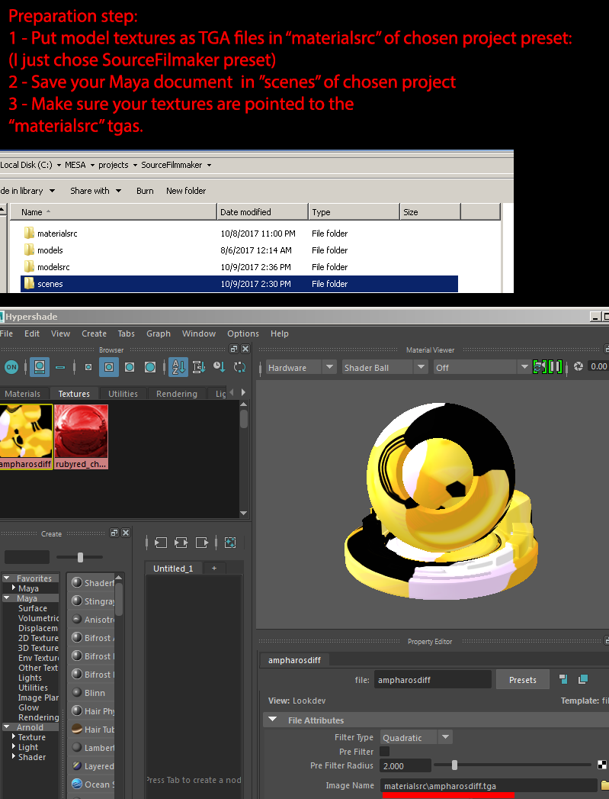
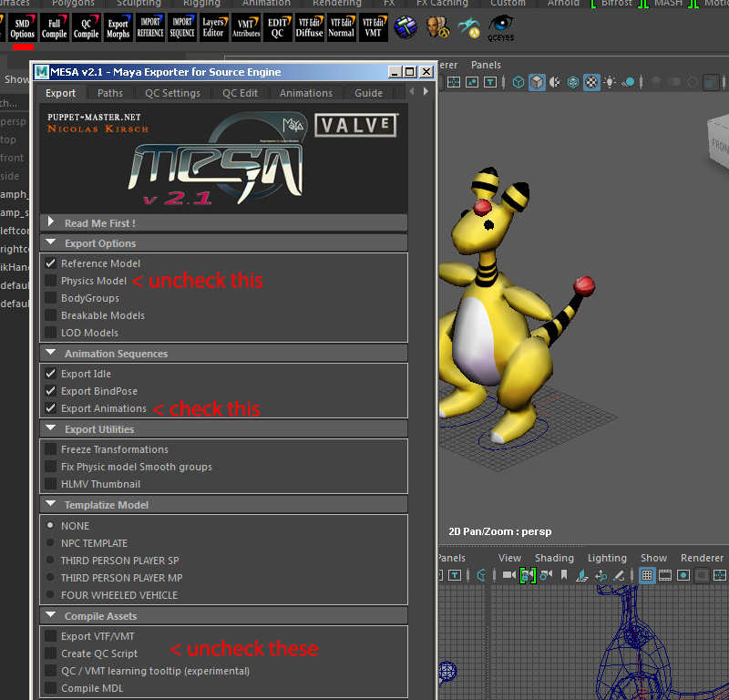
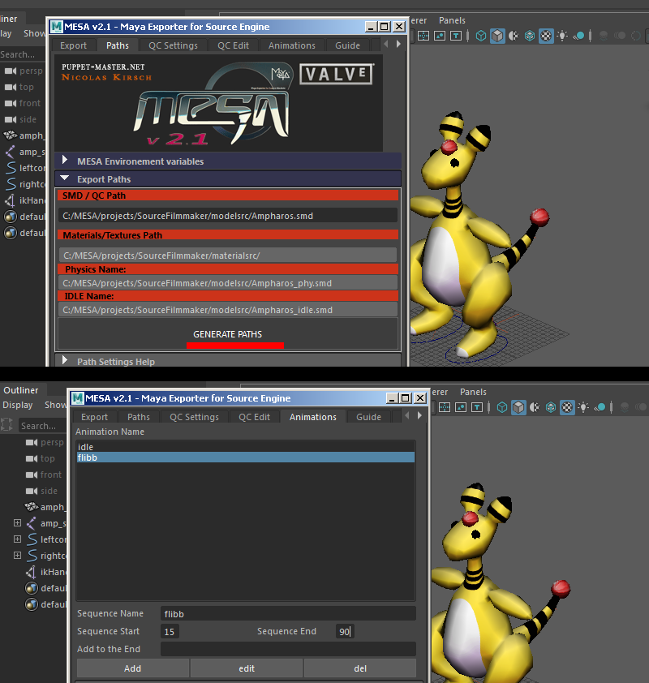
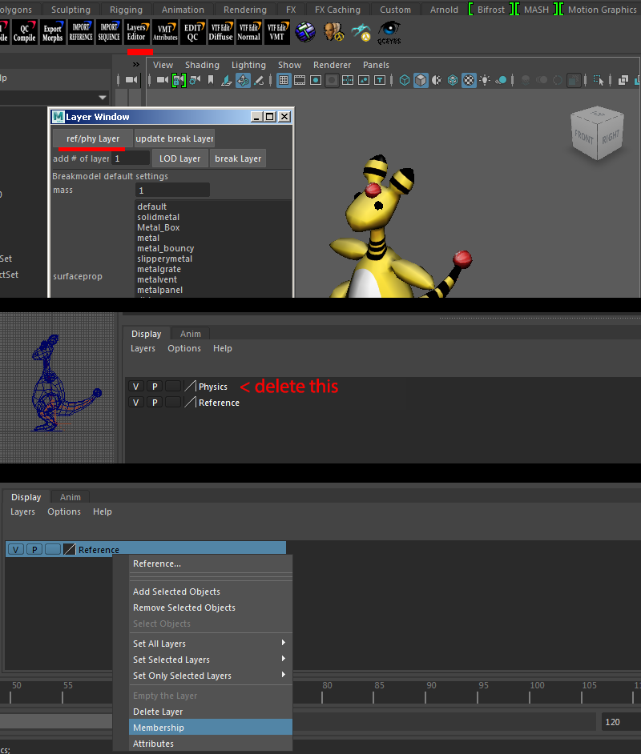
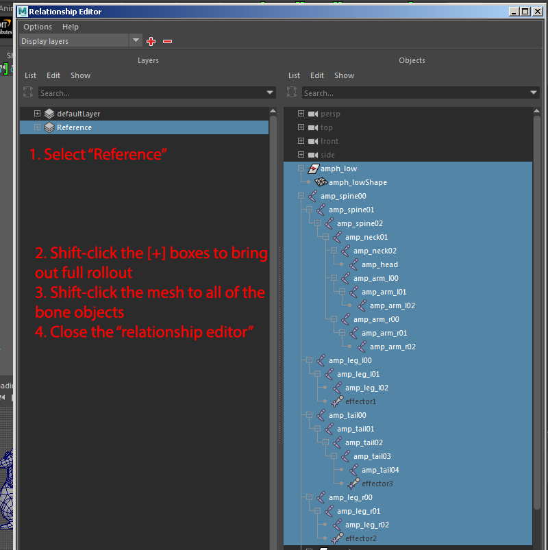
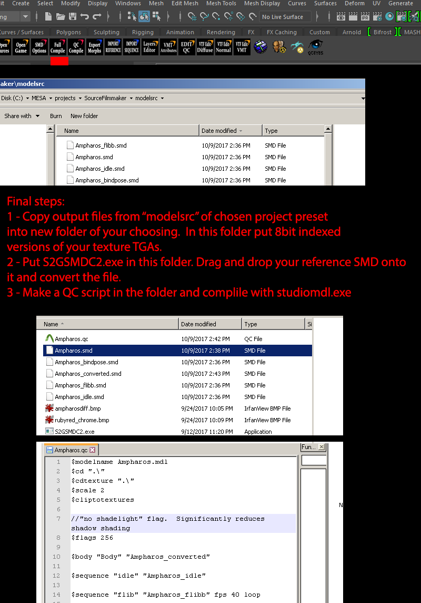

Maya currently is the most difficult to export GoldSrc content to due to the fact that it currently has no goldsrc format exporter. Ive come up with an export method using MESA Source exporter and converting the results using a tool created with the help of LossyDragon. First install MESA Source Engine tools here. (For later versions of MAYA modify the .bat install files to recognize the version year) Then get Lossy's modified version of PeteTheGoats converter
Exporting Reference & Animations SMDs

Go to SMD options and go through this checklist

Generate paths. Be sure you have saved your maya file to the projects or else this wont set up properly!

Layers setup

Set up layers ready for export. Be sure to have your mesh shape expanded like so. Then hit the "FULL COMPILE" button

After hitting the "Full Compile" button the files will wind up here in "modelsrc". Remember you don't need to convert animation SMD's unless your are changing underscore node names.
